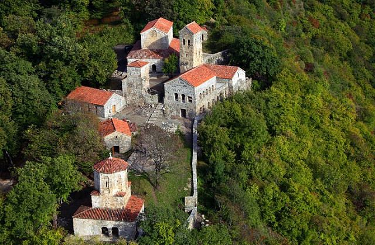
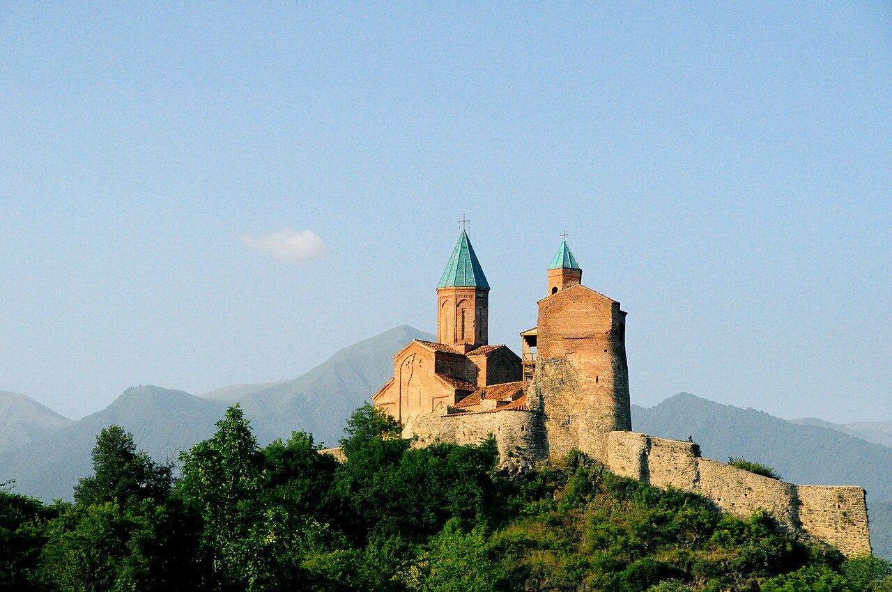

☕ Slow last breakfast at the cottage
Vista Cottage terrace Map
Take a long look at Kazbek before you turn south. Pack, settle payment with the host (GEL 481.95 if you've not already paid), top up water for the road.

A travel day, but the kind that ends in vineyards. Down the highway you came up, around the edge of Tbilisi, then east into Kakheti — Georgia's wine heartland — where you sleep tonight among rows of saperavi and rkatsiteli, in a winery family's guest cottage.
Take a long look at Kazbek before you turn south. Pack, settle payment with the host (GEL 481.95 if you've not already paid), top up water for the road.
Same road, opposite direction — the views look different on the descent. Skip Ananuri if you stopped on the way up. Aim to bypass Tbilisi on the new ring road rather than through the centre — saves an hour at this time of day.
Nothing special here — pick a clean-looking khinkali joint, eat, get back on the road. Save the appetite for tonight.
16th-century royal residence — a single round tower and the Church of the Archangels on a small hill above the Alazani plain. You can walk up to the church (a small museum inside) or just stop at the lay-by for the picture.

The hillside complex of churches dates back to the 4th century — small, monastic, with a wandering peacock or two and the kind of view that makes you go quiet. Time it for late afternoon: the whole Alazani valley stretches below, gold-green in evening light, the Caucasus along the horizon.
The family-run winery sits among the vines just outside the village, with the Caucasus running across the back of the property. Lika and Tornike host personally — settle in, walk a row or two of the vineyard, breathe.
Tasting in their cellar — wine fermented in clay qvevri buried in the earth, the same way Georgians have done it for 8000 years. Then a multi-course Kakhetian dinner at the family table: home-cured cheeses, garden salads with walnut sauce, mtsvadi over coals, churchkhela. Slow, generous, warm — exactly what a Georgian dinner is supposed to be.
Out here at 400 m altitude, surrounded by vines, the night is full of frogs and the occasional dog. Sleep with the window cracked open — the air smells of warm earth.